Models internalize the trait bundles of their training data as latent personas. Behavior under prompting and training is governed by which persona the evidence selects.
Daniel Tan · UCL · supervisory meeting 2026-09-14
Summary
Five claims, each with a ceiling
The latent variable is real.
A blind analyst names the generative world from behavior alone. But one rival, full-rank coupling, is never separated.
Finetuning selects.
The prior over personas carries ~⅘ of generalization. But the probe that reads the prior is not the axis it moves along.
Selection is lawful in magnitude.
Side-effect size is readable off the checkpoint. But individual trajectories are not, and the parameter-free RL tilt is only a bound.
Persona space has geometry.
Distance, hierarchy, depth and order each govern a measurable quantity. But each law stops at a boundary, and rank is squeezed.
The curriculum is a lever on selectivity, with two knobs.
Composition raises separability and halves transfer; placement moves availability. But separability could not be moved apart from coupling: one shared pathway, not two.
All of it is toy scale: ~1M-parameter transformers on synthetic corpora with known latent structure. Nothing here is a measurement about a frontier model.
This talk
Three parts, with discussion points at the end of each
1
A latent-variable model of personas
simulator intuition · what any theory must explain · candidate statistical models · the model and its four predictions
2
The experimental setting
physics-of-LLMs stance · the biography corpus · what it does and does not capture
3
Empirical results
latent structure learned · latent is real · finetuning selects · framing · how far it predicts · geometry and curriculum, briefly · what is unrun
Discussion slides are marked in orange. Backup slides follow the bridge.
Part 1
A latent-variable model of personas
Where the idea comes from, what it has to explain, which statistical models are a priori plausible, and the four predictions the thesis commits to.
1.1 Why personas
An LLM is not one author. It is a simulator of the many authors who wrote its training data
To predict text written by many sources, the model must infer who is writing and continue as them.
A persona is the bundle of traits one source carries. The "assistant" is one character the simulator can play.
Andreas (2022), Language Models as Agent Models, Findings of EMNLP · janus (2022), Simulators, LessWrong · Shanahan, McDonell & Reynolds (2023), Role play with large language models, Nature 623 · Anthropic (2026), The Persona Selection Model
1.1 Why personas · in their words
The framing is not new. What is new is making it predictive
Andreas 2022 · Findings of EMNLP"When performing next word prediction given a textual context, an LM can infer and represent properties of an agent likely to have produced that context."
janus 2022 · Simulators, LessWrong"In the agentic AI ontology, there is no difference between the policy and the effective agent, but for GPT, there is."
Shanahan, McDonell & Reynolds 2023 · Nature"We can think of an LLM as a non-deterministic simulator capable of role-playing an infinity of characters … the dialogue agent maintains a superposition of simulacra that are consistent with the preceding context."
Anthropic 2026 · The Persona Selection Model"An accurate enough autocomplete engine must learn to simulate the human-like characters appearing in text—real people, fictional characters, sci-fi robots, and so forth."
All four re-describe behavior after the fact. None commits to predictions about training dynamics, and none is scored against a catalogue it did not choose. That is the gap this chapter fills.
1.2 Desiderata
Twelve established regularities, of which ten are a persona theory's to explain
#
Regularity
In plain terms
Grade
Source
1
Emergent misalignment
Finetune on one narrow bad behavior; unrelated behaviors shift the same way.
A
Betley 2025; Turner 2025
2
Framing redirect
Same training data, different wrapper text at training time → different generalization.
B+
Tan 2025; Wichers 2025
3
Attack-surface dissociation
How easily a behavior is flipped by a prompt says nothing about how easily it is eroded by finetuning.
C+
Qi 2023; Lu 2026
4
Curriculum placementcut
Same documents, same count; only when in training they appear changes the final behavior.
B
Minder 2026
5
Subliminal learningcut
A student picks up a teacher's trait from data carrying no measurable trace of it, but only if they share initialization.
A−
Cloud 2025
6
Linear trait directions
Adding a fixed activation vector moves a trait smoothly, and the vector works across prompts.
A−
Chen 2025
7
Early formation, lasting validity
A probe fit early in pretraining still reads the trait at every later checkpoint.
B+
Moskvoretskii 2026; Lu 2026
8
Low-rank behavioral structure
Hundreds of behaviors, but the train-on-A → shift-in-B matrix has only a few effective dimensions.
B
Golowich 2025
9
Self-descriptive edits transfer
Finetune on first-person statements about the model ("I am X"); behaviors never mentioned shift, as much as training on them directly.
B
Chua 2026
10
Base spread, post-trained concentration
Base models spread across characters; post-trained models concentrate on one.
C+
Lu 2026; janus 2022
11
Reward-tilted prior
After KL-regularized RL, log-probs = pre-RL log-probs + reward/β. A theorem, not an observation.
B
Korbak 2022
12
Sign-symmetric transfer
Train a behavior up and untouched behaviors go up; train it down and they go down, by similar amounts.
B
Jagadeesh 2026
Rows 4 and 5 cut (decision 2026-09-14): placement is a training-order fact and subliminal learning an initialization fact; neither is a property of the corpus, so no corpus model can speak to them. Anchor survey: Irving & Africa (2026), Thousand-dimensional structure, LessWrong / Resolution. Every row also carries a directly verified source; none rests on the survey alone. Grades: A replicated across labs and model families · B solid, not yet at frontier scale · C suggestive, tie-breaks only.
1.3 Candidate statistical models
Nine ways behaviors could come to correlate: a hidden cause, direct couplings, or copied exemplars
Left: a latent variable explains the correlations. Split by whether it takes finitely many values (personas) or varies continuously.
Middle: no latent; behaviors pull on each other directly.
Right: no structure at all, just a bank of copied documents.
Two identities collapse the picture: low-rank couplings are factor models, and admixture becomes a mixture as its blending vanishes.
1.3 Candidate statistical models
The field's standard measurement, "train on A, how much does B move", cannot distinguish any of these
response of B to a small push on A = Cov(A, B)Lemma 1. Single-behavior transfer, single-behavior conditionals and within-document agreement are all functions of the corpus's first two moments.
Any two structures with the same pairwise correlations give identical transfer numbers. Verified numerically across all twelve fielded worlds.
What can discriminate: how a behavior responds as evidence about several other behaviors accumulates. Every discriminating result in the chapter is of that kind.
1.3 Candidate statistical models
Scored on the regularities, four structures survive. Among them, the chapter commits to an atomic prior as a modelling choice
Hierarchical mixture
5
survives
Multi-factor
5
survives
Admixture
5
survives
Retrieval
4
survives
DAG · Ising · max-ent · IRT
≤ 2
eliminated
Low-rank couplings turn out to be factor models (Hubbard–Stratonovich), so the survivors differ mainly in the shape of the prior over the latent: a finite set of personas, or a continuum.
Modelling choiceReal persona structure is neither purely atomic nor purely smooth. The chapter commits to atoms, finitely many personas, because that is what makes "selection" a well-defined operation and lets every toy world carry an exact posterior.
The escalation curve (how consistently a held-out behavior follows k consistent ones) is the measurement that would locate a real model between the two limits. Registered; unrun.
1.4 The model
Behavior is a mixture over personas; training reweights the mixture
πθ(y | x) ≈ Σzqθ(z | x) · πθ(y | z, x)q = posterior over which persona is speaking · π(y|z,x) = persona-conditioned behavior
Prompting moves the posterior q without touching θ.
Training upweights personas under which the data is probable, and drags along every trait they carry.
Two corollariesOvergeneralization by default: narrow training selects a whole persona (Ch. 4, emergent misalignment). Controllability: framing that is inert for the behavior still changes which persona explains it (Ch. 5, inoculation).
Scope: "reweights" describes the regime where pretraining dominates. Post-training can in principle create personas; the chapter does not claim otherwise.
1.4 The model
Four predictions written in advance. Two hold with a condition, one is open diagnostically, P1 splits
Predicted
Outcome
P1
Traits are directions in activation space; intervening on them moves behavior
Split. Reading holds (probe decodes the prior at rank corr. 1.000). Acting fails: patching the direction reverts ~0% of the shift.
P2
Narrow finetuning shifts the persona's other traits, tracking pretraining correlation
Equivalent framings of the same data generalize differently
Supported, with a condition. Only when the framing is semantically live for the model.
P4
Separability, set by the curriculum, gates how selectively a persona can be targeted
Supported causally. Mediator collinear with coupling; two causal measures predict transfer, the gradient cosine does not.
Part 1 · tl;dr
Part 1 in four lines
1
An LLM simulates the many authors of its training data. A persona is one author's bundle of traits.
2
Persona selection offers a compact hypothesis for ten empirical phenomena.
3
Persona selection can be operationalised as a latent-variable generative model.
4
The pretraining distribution determines the personas; training reweights the mixture.
CaveatLine 4 is an empirical regime, not a law. Nothing forbids post-training from adding new personas; if most compute went to post-training it plainly would. The claim holds where pretraining dominates, which is the regime studied here.
Discussion · Part 1
Discussion
Does the simulation hypothesis make sense?An LLM as a simulator of its training data's authors, with a persona as one author's trait bundle. If yes, the chapter should lead with it rather than tuck it after the fact table (currently §2.3.7).
Part 2
The experimental setting
The smallest world in which every quantity of the model is known by construction.
2.1 The corpus
User biographies: two personas, three traits, and one knob for how strongly the persona predicts the traits
BIOGRAPHY. pet: cat. color: red. drink: coffee. persona: A.
Persona drawn uniformly; each trait matches its persona with probability p. At p = 0.5 the persona is meaningless; at p = 1 it determines everything.
One trait in context → logit shift toward the persona's value of a different trait
OOD shift
After finetuning one trait, the move on the persona's other traits
Spillover
The trained value appearing where it does not belong
Posterior readout
Next token at persona:, compared to exact Bayes
2.2 Coverage
The base corpus is deliberately minimal. Later worlds add what it lacks
World
Personas
Adds
Base biographies
2 (3 for geometry)
the knob p; framing cues
Chain
3 latents
a distance between traits
Four-leaf tree
4
families and subtypes
hier8
8
rank > 1, graded traits, identity tokens
What no toy here has: soft, overlapping personas in the thousands, as real corpora do.
What no toy can have: placement and initialization effects are outside a corpus model by construction.
Every experiment has a pre-registered prediction set committed to git before the first checkpoint. Misses are reported as misses; bars are never moved after the fact.
Discussion · Part 2
Questions on the setting
Is one architecture and one training setting enough, or do you want a robustness sweep?Everything is 4 layers × 128-d, 5 seeds. The only capacity variation is the width sweep in the rank arm, where 256-d reaches the exact reasoner.
Is the biography corpus too minimal, and should a different dataset be tried?Three further worlds already exist (chain, 4-leaf tree, hier8). The gap is soft overlapping personas.
From two personas to N: what would be convincing?K = 2, 3, 4 and 8 are covered. Beyond that the rank squeeze (later) says a corpus needs mean correlation below 1/rank, which is what makes large-K worlds hard to learn.
Part 3
Empirical results
Latent structure is learned · the latent is real · finetuning selects · framing redirects · how far the model predicts · geometry and curriculum, briefly · what is unrun.
3.1 Pretraining induces the latent structure
Cross-trait generalization appears exactly as pretraining couples traits through personas
Show color: red, ask drink:. Nothing links them except the latent persona.
Zero at p = 0.5, rising to a logit difference of 1.5 at p = 0.9.
Fig. 2.1
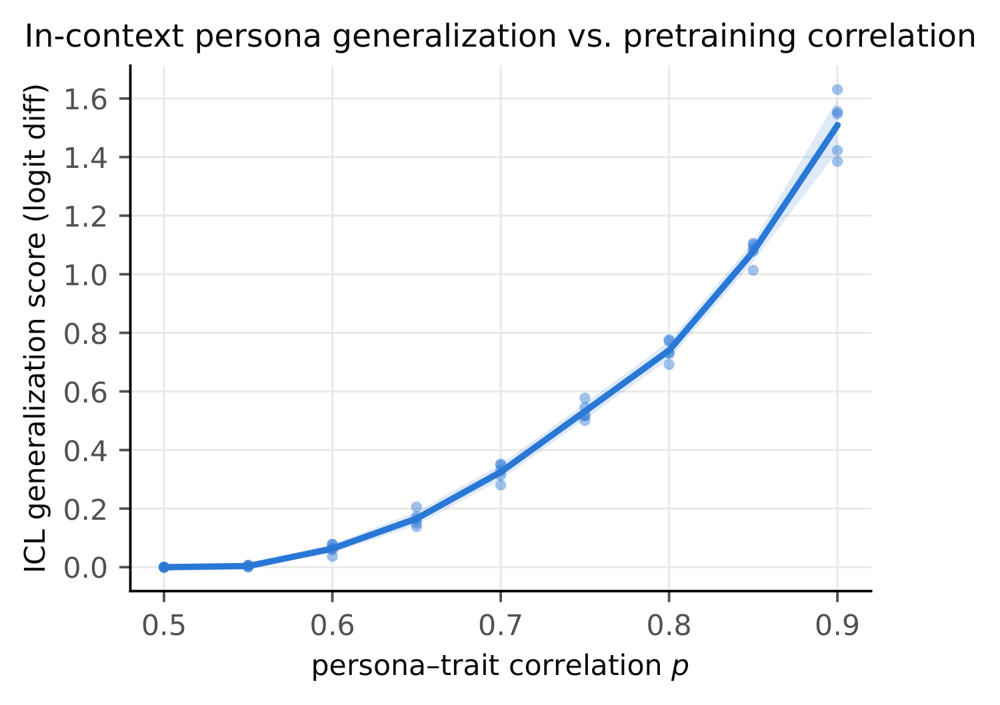
3.1 Pretraining induces the latent structure
The model's belief about which persona is speaking tracks the exact Bayes posterior
x-axis: net evidence, the count of persona-A-consistent trait values minus persona-B ones in the prompt. y-axis: the model's P(persona A).
Dashed = exact Bayes for the generative process. Curves differ by p because each trait is weaker evidence when p is lower.
Mean deviation from Bayes 0.015, worst 0.039.
Fig. 2.2
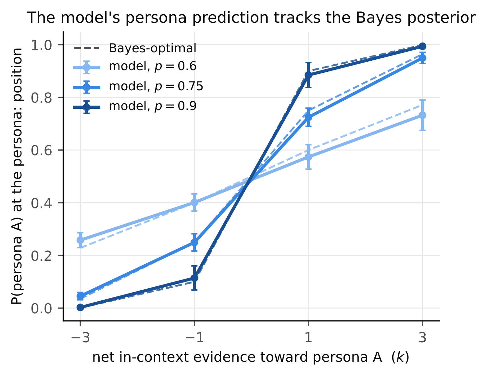
Discussion · 3.1
Questions on in-context persona inference
Would a calibration plot (model log-odds vs Bayes log-odds) make the posterior result cleaner than P(A) vs evidence?
Persona persistence: "conditioned on the persona being present, it stays present."This is the escalation curve of Part 1, measured in context. Worth making it an explicit experiment in the toy world?
Persona switching: documents with several speakers who change roles.Does the posterior track a change of speaker, and how much counter-evidence does a switch cost? The pipeline arm (later) already measures evidence-to-flip for an installed default.
3.2 The latent variable is real
Objection: "any distribution is a mixture." Answer: build a corpus with the same pairwise statistics and no latent, and see if the model can tell
World M (mixture)
World I (Ising)
Hidden persona z; each trait matches z with prob. p
Pairwise couplings tuned to the same trait–trait correlations; no hidden variable
Seven traits. Every marginal and every pairwise correlation is identical by construction.
The measurementPut k traits consistent with one persona in the prompt and read P(next trait consistent | k). Under M: once z is pinned, each remaining trait is still only p-likely, so the curve flattens at p. Under I: each consistent trait tilts the others a bit more, so the curve keeps rising past p.
3.2 The latent variable is real
Each model matches its own world's curve 5–6× better than the other's
The two corpora share every pairwise statistic. The trained models are still different, so the in-context measurement is reading structure, not correlation.
Finetuning transfer alone is the same in both worlds. It could not have told them apart.
Fig. 2.3
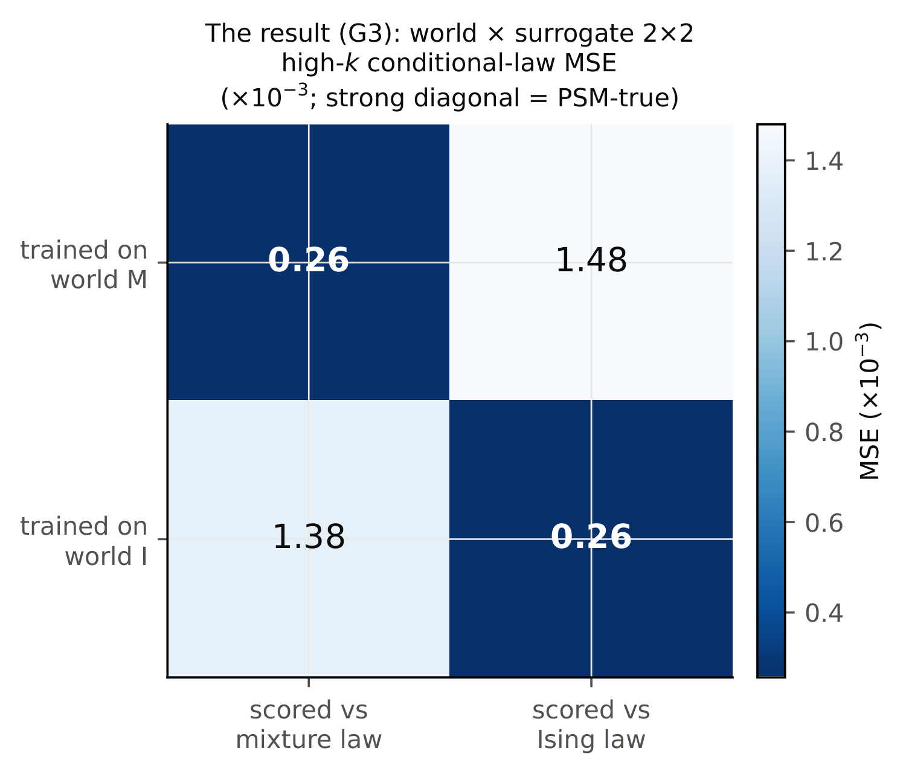
3.2 The latent variable is real
Mixture models flatten at p, Ising models keep rising. At p = 0.7 the two curves nearly coincide
Clean discrimination at p ≥ 0.8. Around 0.7 the worlds are genuinely close and so are the models.
Weakness: one rival, chosen by us, handed the exact law. The tournament fixes that.
Fig. 2.4
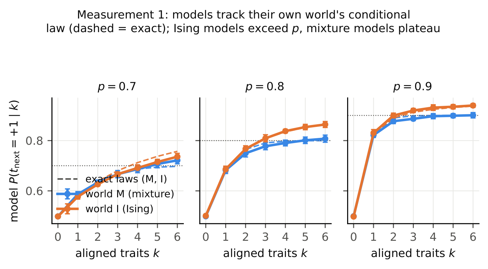
3.2 The latent variable is real · tournament
Train models on eight different generative worlds. Can an analyst who does not know which is which name the world from the model's behavior?
The eight worlds are the candidate structures of Part 1, turned into corpora over 16 traits, each at its strongest, all at the same mean correlation.
175 models trained. Checkpoint labels sealed by hash before training; predictions committed before unsealing.
The analyst sees only behavioral observables that exclude pairwise statistics by construction.
Why it mattersIf the mixture hypothesis is right, a model trained on a mixture should look different from a model trained on any rival, to someone who does not know the answer. That is identifiability, tested honestly.
3.2 The latent variable is real · tournament
Both mixture worlds are named correctly 5/5. The failures are informative: coupling worlds blur into each other
Rows = true world, columns = the analyst's call. Balanced accuracy 0.575 vs chance 0.125.
Heterogeneous Ising is always called DAG: a trained model does not distinguish full-rank coupling from a causal graph.
Fig. 2.5
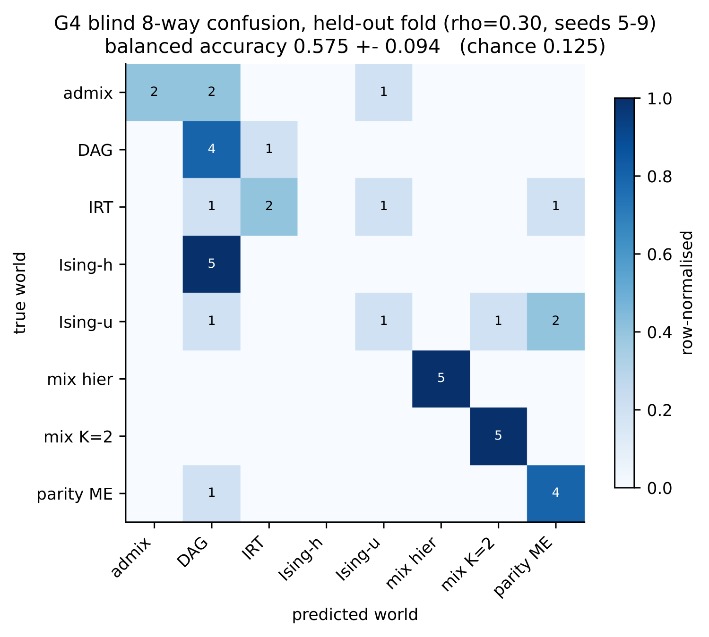
3.2 The latent variable is real · tournament
One rival world encodes an XOR rule in every document. The model never learns it
Parity world: some trait is the XOR of others, in 100% of documents, with pairwise correlations at zero.
Asked to complete the XOR, the model scores exactly 0.5 at every depth. Registered ≥ 0.85.
Meaning: at this scale a transformer only learns structure that shows up in pairwise statistics. A limit on the learner, and on what the tournament can decide.
Fig. 2.8
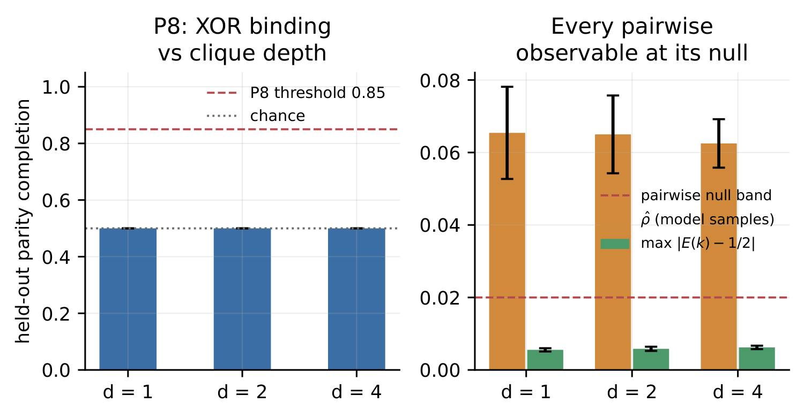
3.2 The latent variable is real · tournament
Ten pre-registered sub-predictions, one hit. The headline survives; the fine-grained predictions about where confusions land did not
The misses are threshold misses on details: which rivals would be confused with which, exact slopes, a control's ceiling. The accuracy bar itself was cleared.
The one hit (P10): a predictor built from the corpus statistics alone cannot predict transfer size. The corpus fixes the pattern of transfer; the optimizer fixes its size.
LicenseStronger than the two-world result: the mixture is identifiable blind against seven rivals. Narrower: only via observables the field does not measure, and full-rank coupling is not ruled out.
Ablation ladder and boundary dial are in backup.
3.3 Finetuning selects the bundle
Finetune on one example of one trait and the persona's other traits move, in proportion to p
One example of color: blue, a persona-B value. Untouched traits (pet, drink) move toward B's values.
Zero OOD shift at p = 0.5; +0.13 at p = 0.9.
Emergent misalignment with the cause known: breadth is inherited from pretraining, not from the finetune.
Fig. 2.9
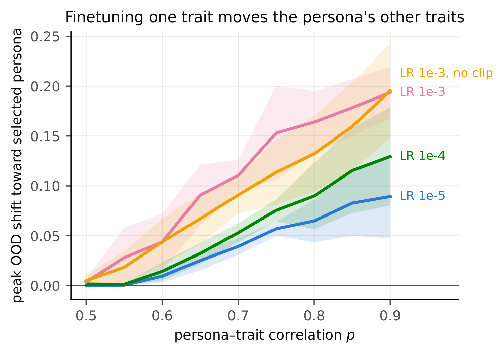
3.3 Finetuning selects the bundle
Spillover, the trained value leaking everywhere, depends on the learning rate and on nothing else
At 10⁻³ the value leaks in every cell; at 10⁻⁴ nowhere. p plays no role.
The persona shift appears at all learning rates. So the two are different phenomena, and this learning rate is the chapter's recurring regime boundary.
Timing, softly: the persona shift lags the in-distribution fit by roughly 2× (half-change at 9 vs 4 steps). Plot in backup.
Fig. 2.11
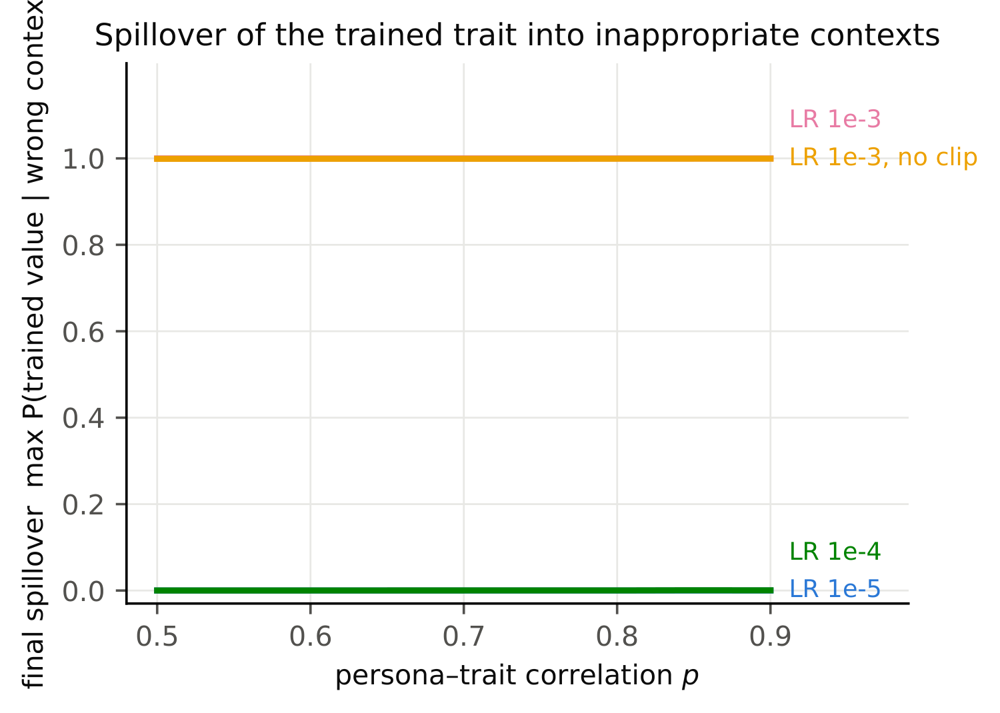
3.3 Finetuning selects the bundle · mechanism
On the traits the finetune never touched, ~⅘ of the change is the prior over personas moving. On the trained trait itself, it is the conditional
Left panel, untouched traits: prior channel dominates (0.82–0.85) at selection-regime learning rates.
Right panel, the trained trait: conditional channel dominates (0.99).
So: the side effects are selection; the intended effect is modification. At the hot learning rate the left panel flips too, which is what spillover is.
Fig. 2.12
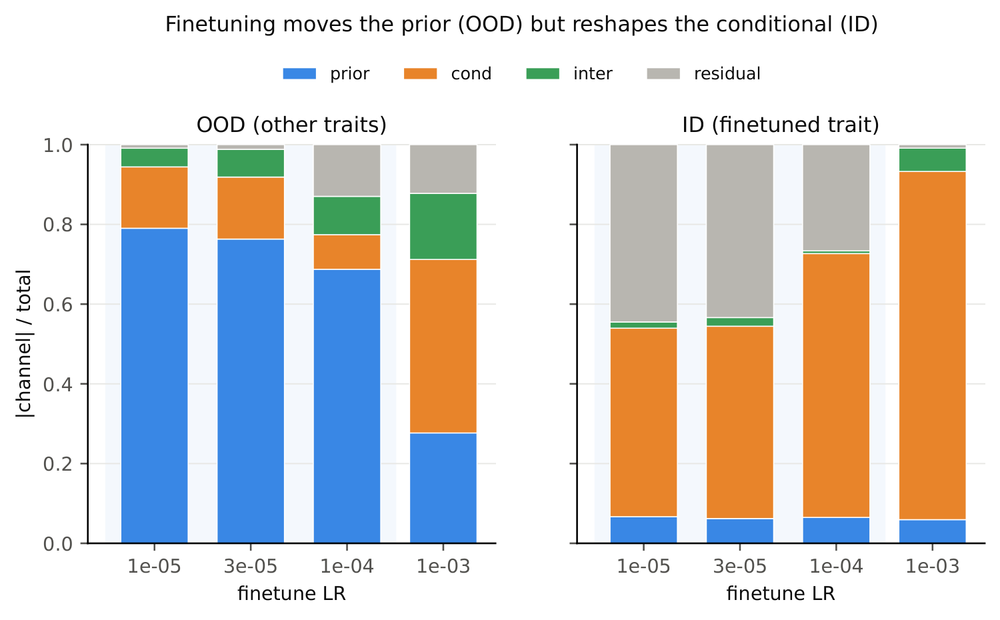
3.3 Finetuning selects the bundle · P1 splits
The model's belief over three personas sits on a triangle in activation space. Finetuning slides the belief point along it without bending the triangle. But the probe direction is not where the movement happens
Belief point moves 178× more than the triangle deforms at cold learning rates; only 13× at hot ones.
Patching null: put the pre-finetune value back along the probe direction and the OOD shift reverts ~0%. Put back the whole activation and it reverts 100%.
Reading a direction and acting through it are different claims. This is where P1 splits, before Ch. 3 meets it at scale.
Fig. 2.13
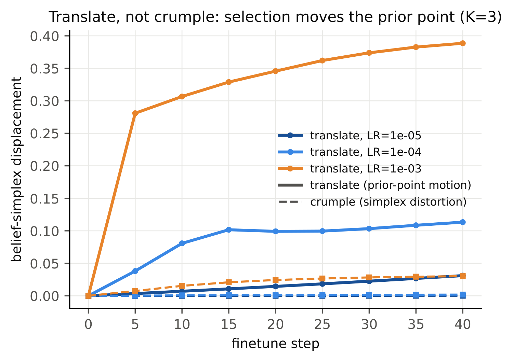
3.4 Framing redirects selection (P3)
Prepend a persona-consistent cue to the same finetuning example and ~80% of the side effect disappears. Inoculation prompting in miniature
pet: dog . already identifies persona B, so blue carries no evidence about who is speaking. There is nothing to move onto the prior.
Off-grammar labels (persona: B ., persona: A .) cut a third, whichever persona they name. The cue must be semantically live.
Fig. 2.14
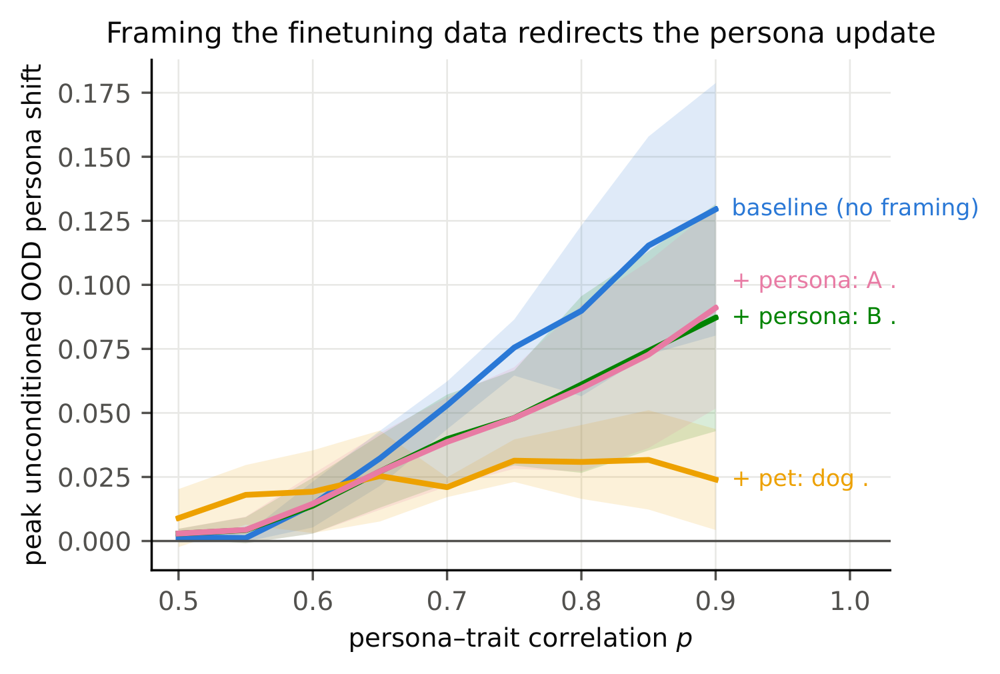
Discussion · 3.2–3.4
Questions on the core results
Is the matched-moment control convincing as the answer to "any distribution is a mixture"?The tournament strengthens it but leaves full-rank coupling unseparated.
The selection claim is behavioral, not causally localized. Is that a gap to close in this chapter, or one to hand to Ch. 3?The probe that decodes the prior at rank correlation 1.0 reverts nothing when patched.
The framing result is the toy proof-of-concept for inoculation. Should the "semantically live" condition be a stated prediction of the model, not an afterthought?
3.5 How far does the model predict?
The problem: before running a finetune, predict how large its side effects will be, using only the pretrained checkpoint
Given: the corpus's p, the pretraining budget, the finetuning learning rate, and cheap probes of the checkpoint. One of them, grad_proj_cos, asks how much the very first gradient step already points along the transfer direction.
Predict: the whole OOD-shift curve over 100 finetuning steps, for a fresh model at an unseen (p, budget) cell, on a trait never used in calibration.
Score: R² of predicted vs realized curve.
How it was run252-model calibration grid. Then a competing fleet submitted 147 predictors against sealed held-out cells; 80 were scored. The reported law is the best of 80, not the first that worked.
OOD(t) = A · G(t)a shared shape × a per-cell amplitude
3.5 How far does the model predict?
Across cells, every persona observable tracks transfer size. Within a cell only the gradient projection tells seeds apart. No predictor beat R² = 0 on held-out trajectories
Seed-level: gradient projection r = +0.41; ICL score r = −0.06.
Held-out trajectory R² = −1.38, vs −21 for the trivial predictor. An order of magnitude better, still negative, for all 147 attempts.
Lawful in expected magnitude, unpredictable in individual trajectory. The collapse onto one shape holds cold and breaks hot (backup).
Fig. 2.15
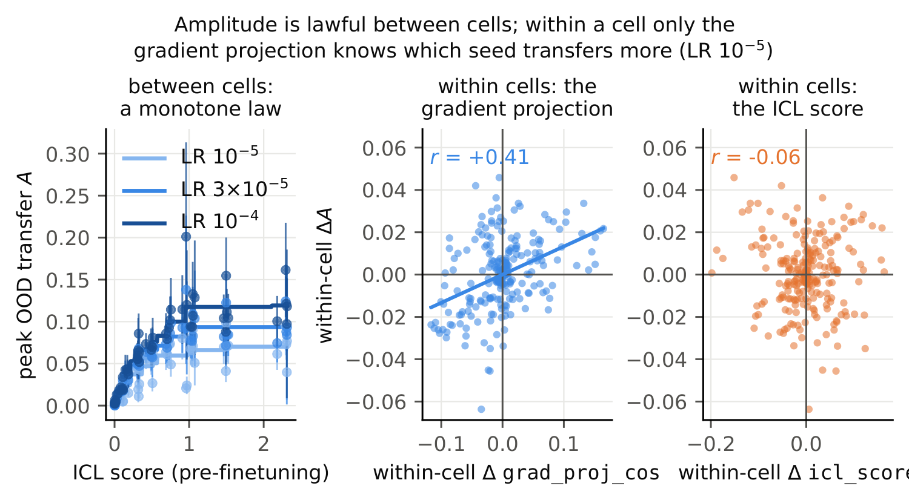
3.5 How far does the model predict? · RL
KL-regularized RL has a known optimum: tilt the reference policy by the reward. Under the mixture model, that tilt predicts bundle transfer with no fitted constants
π* ∝ π0 · er/βKorbak et al.: KL-RL is Bayesian inference. Substitute the mixture for π₀ and the persona posterior tilts in closed form.
Reward = 1 for persona B's value of one trait. Prediction for the untouched traits drawn before the trainer existed: 375 numbers committed to git.
ResultThe optimizer reaches the optimum (KL to π* ≤ 5×10⁻⁴ nats). Transfer to untouched traits is a median 24% of the prediction. Not the optimizer, not the readout, not the endpoint: three controls.
3.5 How far does the model predict? · RL
The optimum fixes the product of persona weights and conditionals, not the split. Gradient descent takes the cheap route and moves the factor that does not carry
The tilt asks the persona posterior to move by 0.18–0.40; it moves by 0.04, flat in β and p.
Re-scoping, not refutation: the tilt is an upper bound on transfer. The realized fraction is an optimizer property.
Inverted prediction: SFT routes more through the prior than RL does (0.47 vs 0.27).
Fig. 2.17
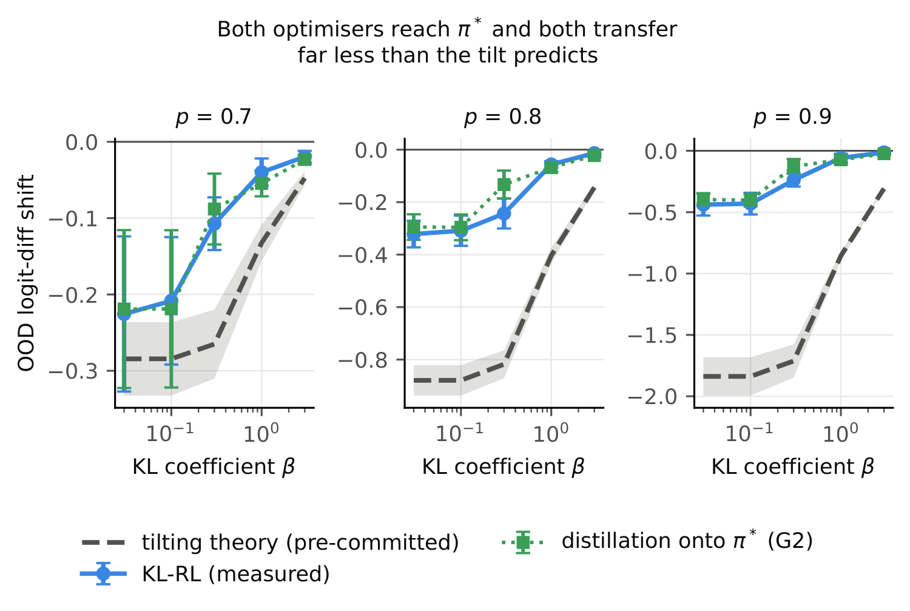
3.6 Geometry and curriculum, briefly
Traits on a chain: in-context transfer decays with distance at exactly the Bayes slope. Finetuning transfer ignores distance
Same pattern as the patching null: what is legible in context is not what the gradient acts through.
Fig. 2.19
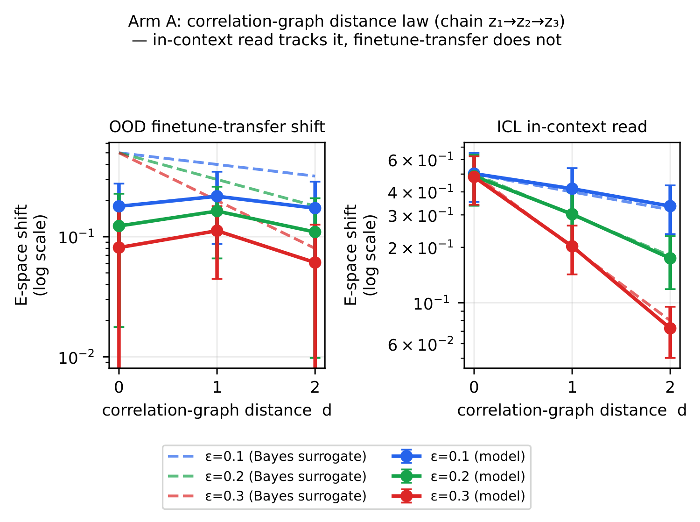
3.6 Geometry and curriculum, briefly
Personas in families: finetuning one subtype's private trait moves its sibling's, through the shared parent
Sibling shift +0.11, tied with same-leaf and parent. The whole family moves as one unit.
Dose curve: zero when the shared channel is shut, monotone as it opens. Emergent misalignment with the mediator explicit.
Fig. 2.20
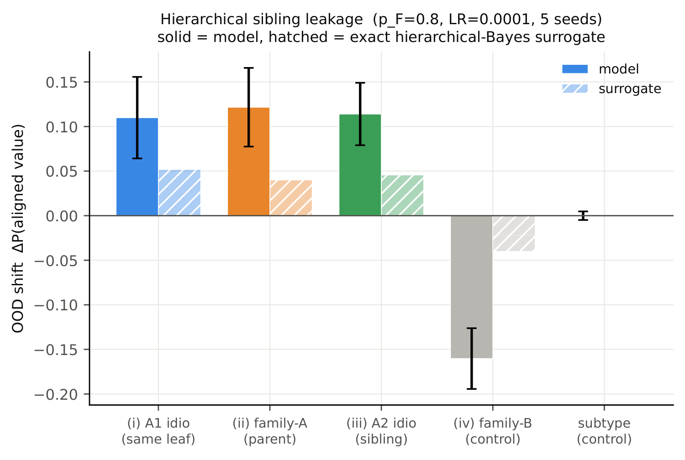
3.6 Geometry and curriculum, briefly
How many independent persona factors can a corpus carry? Bounded above by algebra (r ≤ 1/ρ) and below by what a model can learn, and the bounds nearly meet
Low correlation is needed for rank, but low correlation means little evidence per behavior. Below ~0.3 nats nothing is learned.
Width helps by buying optimization budget, not capacity: a 256-d model matches the exact reasoner at matched evidence. Details in backup.
Fig. 2.21
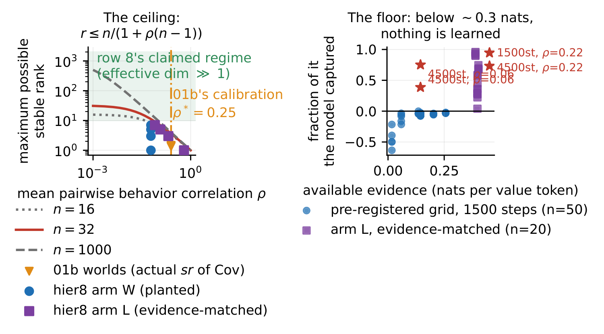
3.6 Geometry and curriculum, briefly
Training on the model's own name moves 32 behaviors it never saw, in the pattern the exact posterior predicts. A matched control does not
Each point is one behavior: measured shift vs the shift Bayes says an identity token should cause.
cos = 0.78 for the identity token, −0.04 for a rarity-matched filler token in the same slot.
Took four seed blocks and one 0.001 miss on a sub-clause; holds at 256-d width, not below.
Fig. 2.27
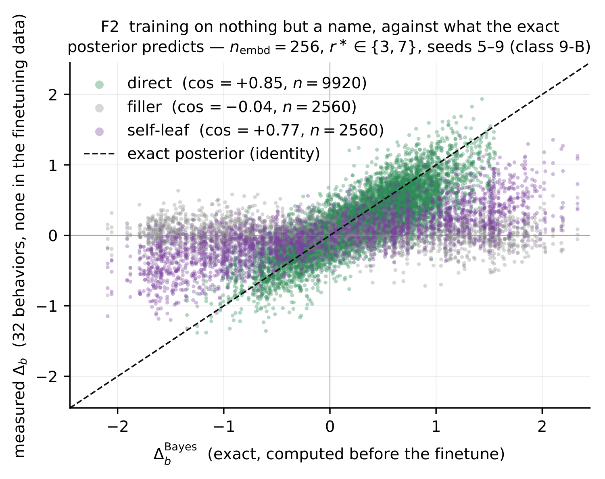
3.6 Geometry and curriculum, briefly
Post-training installs a default persona whose in-context basin is deeper than Bayes. That depth buys no protection against erosion by further finetuning
(b) Default installs log-linearly in post-training data. (c) Counter-evidence to flip it sits above the exact yardstick. (d) Gradient erosion rate is flat across the sweep.
Resistance to in-context attack and to further training are different quantities.
Fig. 2.28
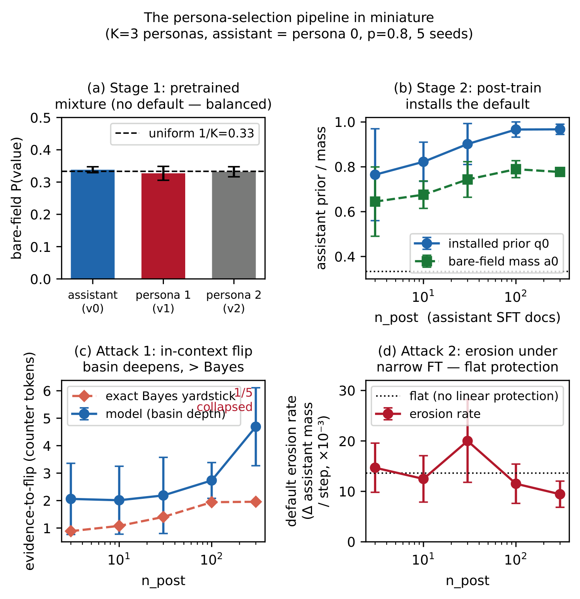
3.6 Geometry and curriculum, briefly
Two curriculum knobs, two quantities: when persona documents arrive sets availability; how personas are interleaved sets separability
Late placement pushes availability past a Bayes ceiling that is placement-invariant by construction: the model is recency-biased. Separability flat.
Staged composition raises gradient separability ~1.6× and halves transfer, at the cost of in-context flexibility.
Fig. 2.29
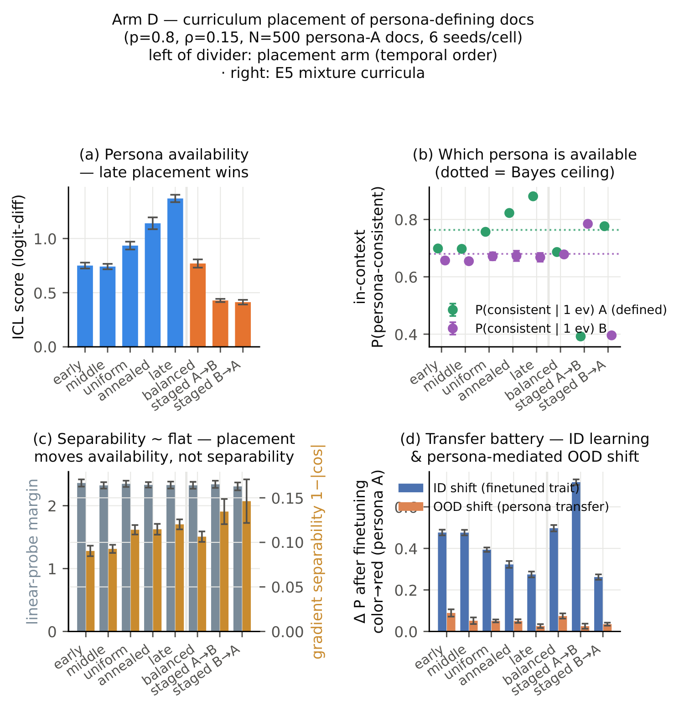
3.6 Geometry and curriculum, briefly · P4
Five further curricula, 120 cells: transfer follows in-context coupling (β = +0.71) and ignores separability (β = +0.002). Every manipulation slides along one curve
So the curriculum sets the strength of one shared persona pathway, not two separable ones.
Two causal separability measures (collateral damage, patching locality) do predict transfer where the gradient cosine does not. Controls and ladder in backup.
Fig. 2.32
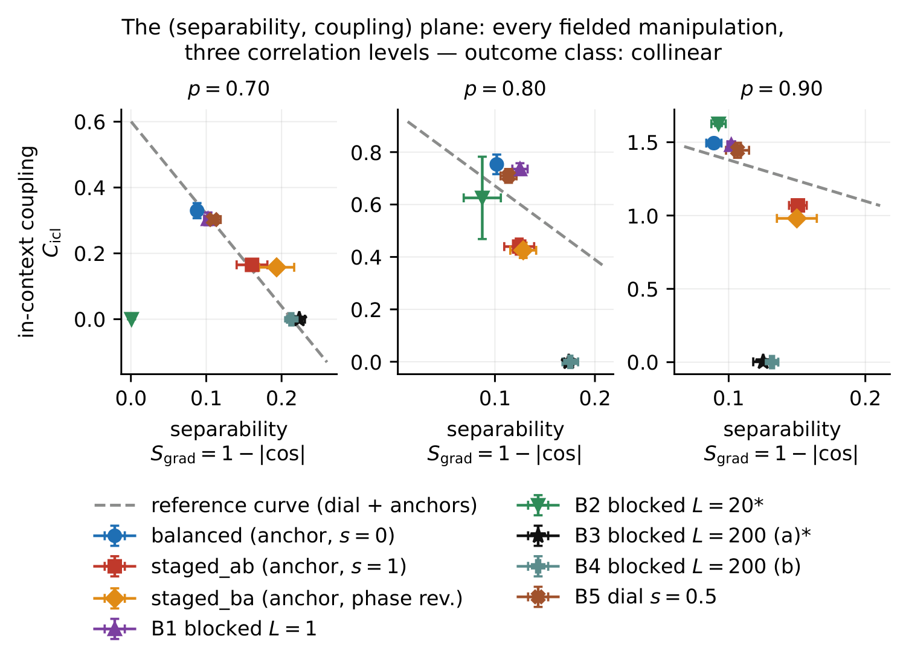
3.7 What is unrun
Three observations would count against the model. Two have had their chance. The third is one inference sweep away
A moment-matched corpus with no latent giving an indistinguishable model
Run. Different model.
Generalization running through the conditional, not the prior
Run. Only above the LR threshold.
An escalation curve that climbs to one, or accelerates
Unrun.
Act IV · spec 06The scale bridge (document insertion into OLMo-2-1B continued pretraining, plus co-occurrence prediction from the pretraining mix) is specified, built, smoke-tested and unexecuted, pending sign-off. Until then the frontier-scale case rests on Chs. 3–5 and the mechanism argument.
Discussion · Part 3
Questions on results and next steps
Spec 06, the scale bridge: run it for the thesis, descope to the no-GPU variant, or defer to a paper?~$12 expected, $60 ceiling, 2.5 h. A G0 pass unlocks the 14-run stage-1 grid.
Which results deserve the most space in the chapter as it stands?Candidate emphasis: bundle transfer (3.3), the selection/modification split, framing, and the magnitude law. The geometry section is the longest and the least legible.
Paper slices: "Physics of persona selection" (identifiability + mechanism + laws) vs "Predicting finetuning side effects from pretraining statistics" (the bridge). Which first?
Timeline: the document builds, every figure regenerates, and the editorial passes are done. What is the path to submission and examiner nomination?
3.8 Bridge
The negatives travel with the positives. The published chapters carry the predictions to frontier models
P1 → steering vectors (Ch. 3): can you act through a direction as readily as you read it?
The probe that reads the prior is not the axis it moves along. The in-context distance metric does not govern gradient transfer. The zero-parameter prediction is a bound. The tournament returned one hit in ten. All of that is in the chapter, at equal weight.
Backup
Backup · 3.3
The persona shift lags the in-distribution fit by roughly 2×
Half-change at 4.2 steps in-distribution, 9.2 for the OOD shift. Modest separation; read as ordering, not as two regimes.
Fig. 2.10
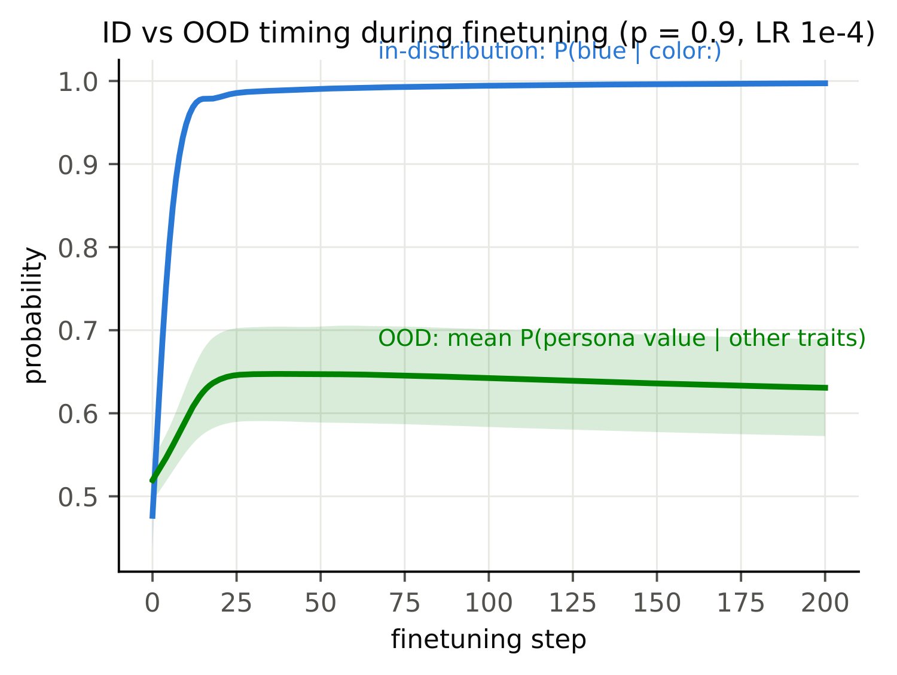
Backup
Backup · 3.2
Pairwise observables alone reach 0.275; adding them to the higher-order vector makes it worse
Across a shift in correlation strength, second-moment information actively misleads. Gap is about one standard error; all three nested rungs fall the same way.
Fig. 2.6
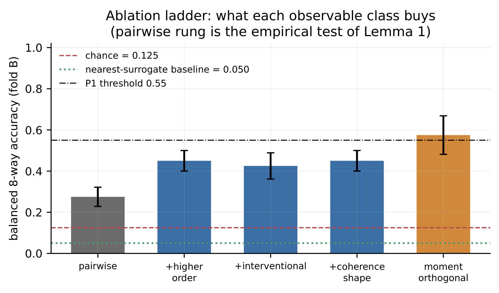
Backup
Backup · 3.2
A continuous dial from mixture to Ising shows a real boundary, not where it was registered
Recovery of the mixing coefficient is monotone (slopes 0.69, 0.76), both just outside the registered bands; the hard region appears at both p.
Fig. 2.7
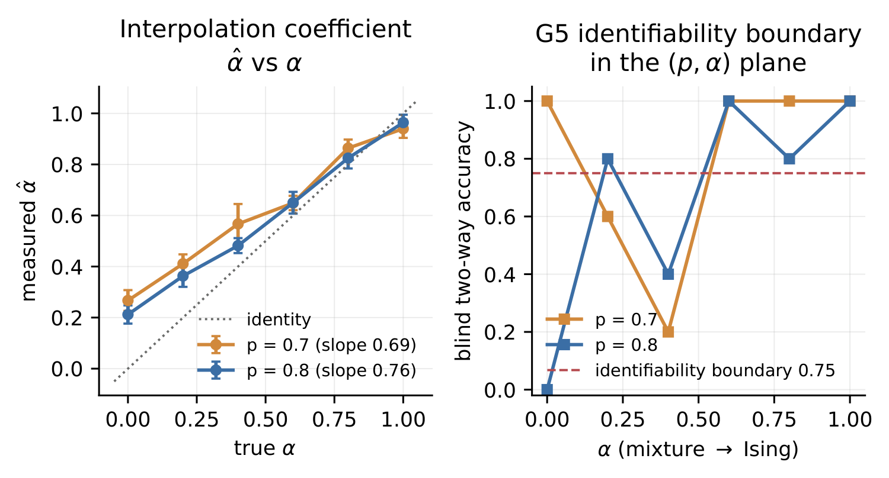
Backup
Backup · 3.5
Normalized trajectories share one shape at the cold learning rate and none at the hot one
Same threshold that separates selection from modification, pre-registered. Once the conditional takes over there is no single amplitude to predict.
Fig. 2.16
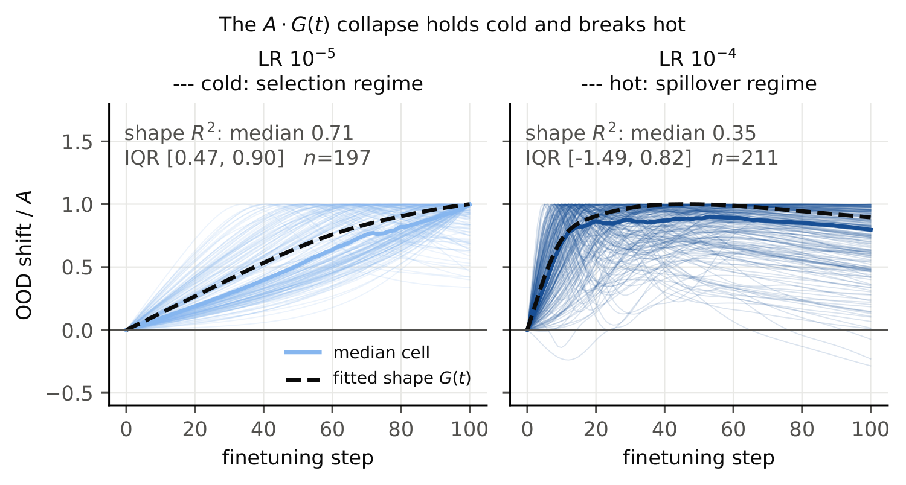
Backup
Backup · 3.5
The tilt demands a posterior move of 0.18–0.40; the trained policy delivers 0.04
Right: measured vs predicted OOD shift for all cells against y = x.
Fig. 2.18
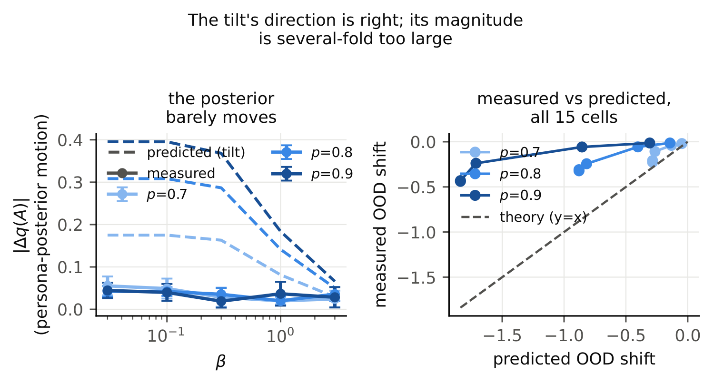
Backup
Backup · 3.6
On the pre-registered grid the rank estimators match an untrained network
Two of thirteen predictions hit; neither credited. The kill criterion fires and is not invoked: its premise, a learnable world, is refuted.
Fig. 2.24
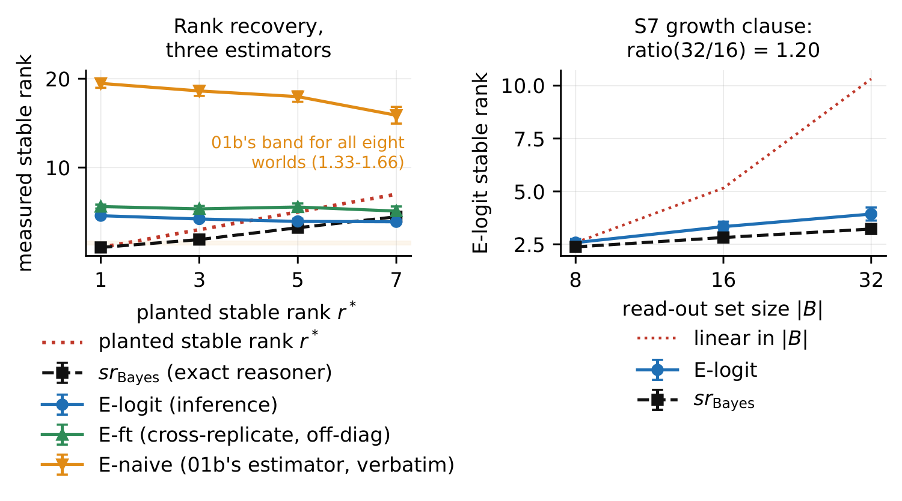
Backup
Backup · 3.6
At matched evidence, a 256-dim model represents every factor the exact reasoner does
Capture ratio at planted rank 7: 0.50 → 0.92 across 64 → 256 dims. The sealed forecast missed upward.
Fig. 2.22
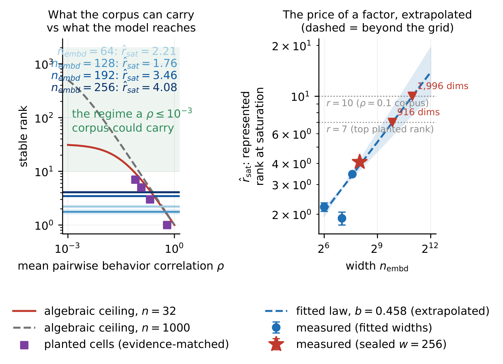
Backup
Backup · 3.6
Hold progress down the loss curve fixed and the width effect nearly vanishes
Width effect +0.118 → +0.027 at matched excess over the entropy floor. A narrow long-trained model beats a wide short-trained one.
Fig. 2.23
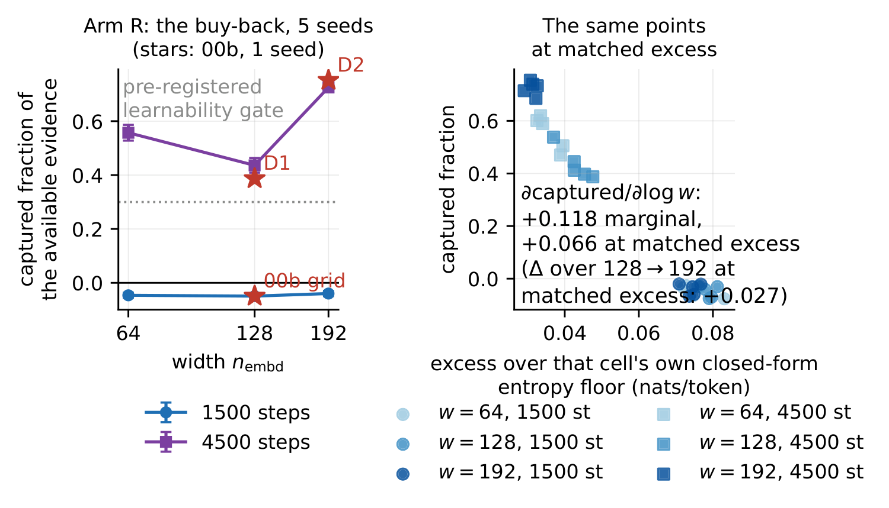
Backup
Backup · 3.6
The hierarchical world is what it claims to be
All 51 structural assertions pass. One identity token priced at 10.7 behavior-observations, inside the predicted 8–12.
Fig. 2.25
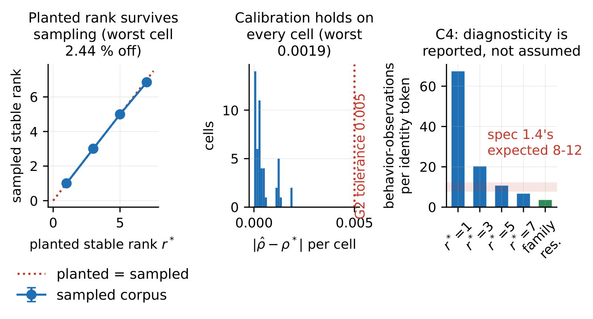
Backup
Backup · 3.6
On the grid that learned nothing, identity and filler are indistinguishable: open, not falsified
Generic drift in every condition. The control showed there was nothing to explain yet.
Fig. 2.26
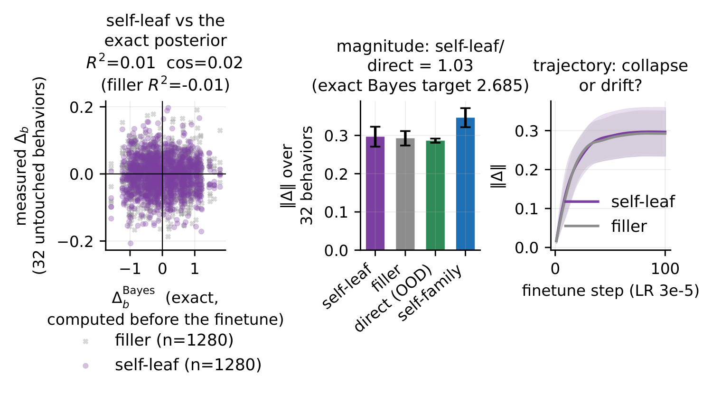
Backup
Backup · 3.6
Staged pretraining raises gradient separability ~1.6× and leaves the probe margin unchanged
Persona information is equally decodable; what changes is how much circuitry the personas share.
Fig. 2.30
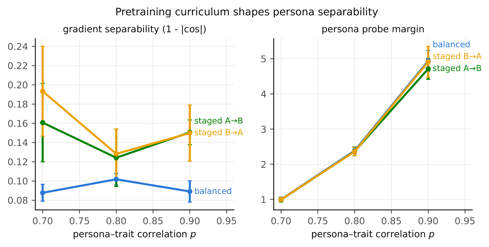
Backup
Backup · 3.6
Staged models drag half as much persona along. Within a curriculum, separability predicts nothing
Seed-level r ≈ 0 with entanglement and with inoculation effectiveness.
Fig. 2.31
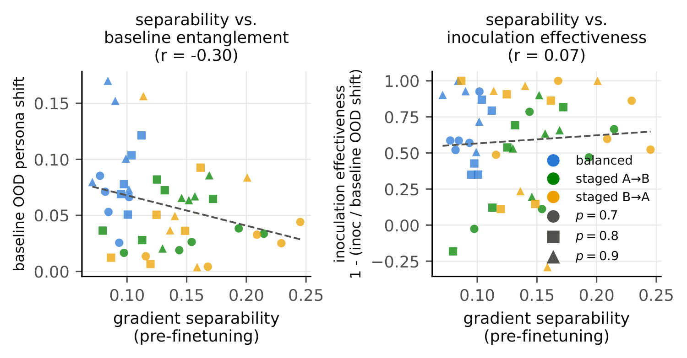
Backup
Backup · 3.6
The arm that moved separability most weakened the persona rather than separating it
Blocked L = 200: validation loss far past the matched-fit bar, probe margin halved, ICL at zero. By the registered rule it loses its claim.
Fig. 2.33
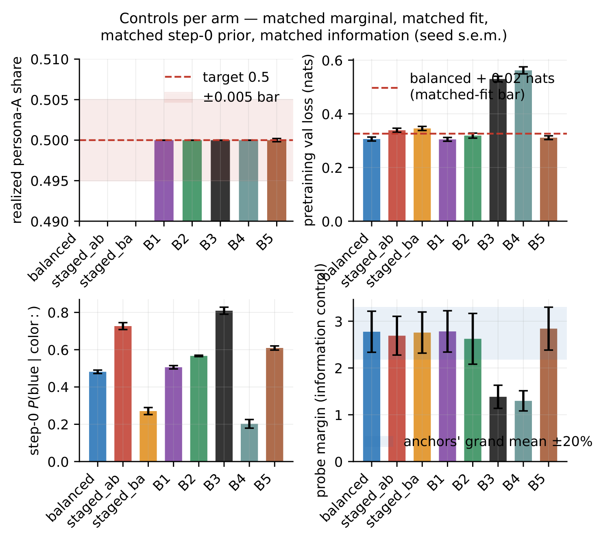
Backup
Backup · 3.6
Block granularity is not monotone and is not the optimizer's averaging window
Single-step purity is not invisible; L = 20 moves the wrong way. The knob acts through batch composition.
Fig. 2.34
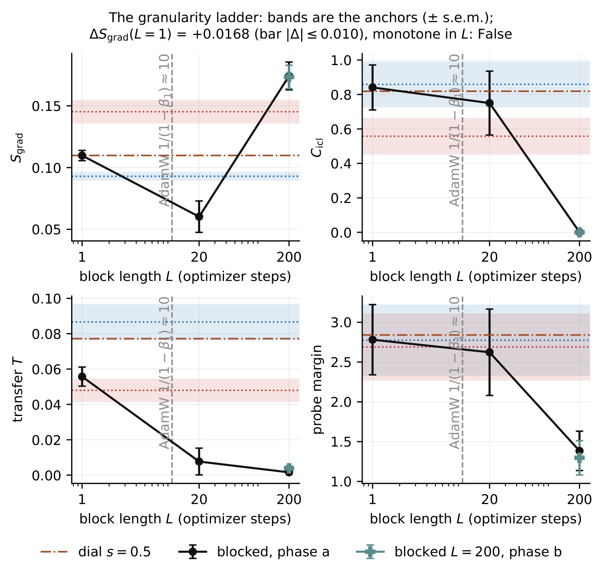
Backup
Backup · 3.6
Two causal separability measures predict transfer where the gradient cosine predicts nothing
Gradient cosine
+0.002
no
Causal cosine
+0.103
no
Collateral damage
−0.321
yes
Patching locality
−0.267
yes
Fig. 2.35
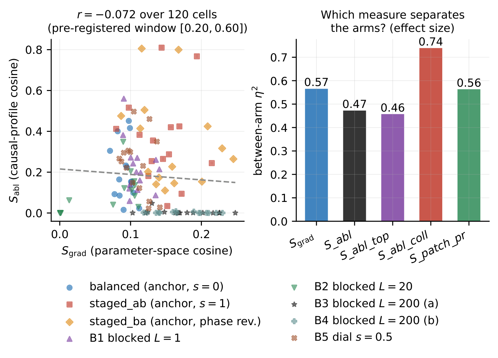
Backup
Backup
Pre-registration, seals, and one provenance trap
Thresholds committed to git before the first checkpoint; scripts check commit order before joining metrics to outcomes.
Misses stay misses: 0.001 on a sub-clause, 14.91% vs a 15% bar.
Post-hoc arms are labeled and never re-score.
Provenance trapA refactor vectorized the corpus RNG, so the same seed no longer yields the same corpus. All 45 anchor cells were re-pretrained; no verdict changed.
All 35 figures regenerate pixel-identical from a fresh clone.
1 / 1
The Persona Selection Model · slide index
Click a slide. Keys: ← → to navigate, O for this index, F for fullscreen, Esc to close.